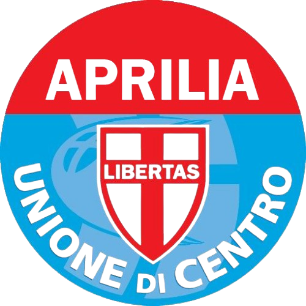

Attività UDC · dal territorio al livello nazionale
Attività rese pubbliche: UDC Aprilia, provincia di Latina, Lazio, Antonio De Poli e Lorenzo Cesa.
Consulta anche tutte le notizie UDC
Incontro UDC a Pomezia, 18 novembre 2026 — dettagli e locandina

Attività rese pubbliche: UDC Aprilia, provincia di Latina, Lazio, Antonio De Poli e Lorenzo Cesa.
Consulta anche tutte le notizie UDC
Incontro UDC a Pomezia, 18 novembre 2026 — dettagli e locandina